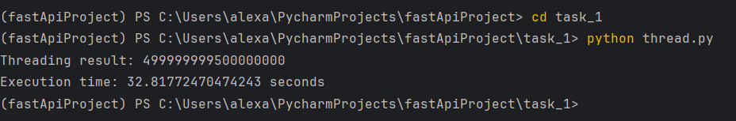
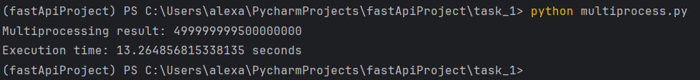
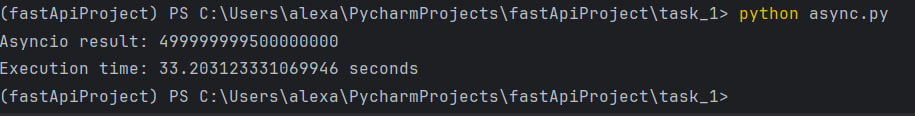

Потоки. Процессы. Асинхронность.
Различия между threading, multiprocessing и async в Python
Задача
Напишите три различных программы на Python, использующие каждый из подходов: threading, multiprocessing и async. Каждая программа должна решать считать сумму всех чисел от 1 до 1000000000. Разделите вычисления на несколько параллельных задач для ускорения выполнения.
Threading
- Используется модуль
threading. - Диапазон чисел делится на 4 части.
- Для каждой части запускается отдельный поток, который считает частичную сумму.
- После завершения всех потоков суммируются результаты.
Особенности: Потоки работают в рамках одного процесса и используют общий GIL, поэтому неэффективны для CPU-зависимых задач.
thread.py
import threading
import time
def calculate_partial_sum(start, end, result, index):
result[index] = sum(range(start, end))
def threaded_sum():
num_threads = 4
total = 1000000000
step = total // num_threads
threads = []
results = [0] * num_threads
for i in range(num_threads):
start = i * step
end = (i + 1) * step if i != num_threads - 1 else total
thread = threading.Thread(target=calculate_partial_sum, args=(start, end, results, i))
threads.append(thread)
thread.start()
for thread in threads:
thread.join()
return sum(results)
start_time = time.time()
result = threaded_sum()
print("Threading result:", result)
print("Execution time:", time.time() - start_time, "seconds")
Результат:

Multiprocessing
- Используется модуль
multiprocessingи пул из 4 процессов. - Каждая подзадача (диапазон чисел) отправляется отдельному процессу.
- После выполнения подзадач их результаты собираются и суммируются.
Особенности: Каждый процесс запускается в отдельной памяти и выполняется независимо, что даёт реальный прирост производительности на многоядерных системах.
multiprocess.py
import multiprocessing
import time
def calculate_partial_sum(start, end):
return sum(range(start, end))
def multiprocessing_sum():
num_processes = 4
total = 1000000000
step = total // num_processes
with multiprocessing.Pool(processes=num_processes) as pool:
tasks = [(i * step, (i + 1) * step if i != num_processes - 1 else total) for i in range(num_processes)]
results = pool.starmap(calculate_partial_sum, tasks)
return sum(results)
if __name__ == "__main__":
multiprocessing.freeze_support()
start_time = time.time()
result = multiprocessing_sum()
print("Multiprocessing result:", result)
print("Execution time:", time.time() - start_time, "seconds")
Результат:

Asyncio
- Используется модуль
asyncioсThreadPoolExecutor. - Асинхронный код через
await asyncio.gather(...)запускает подзадачи в пуле потоков. - По сути, реализована асинхронная обёртка над многопоточностью.
Особенности: Асинхронность эффективна для I/O-задач, но в данном случае (CPU-bound) она работает так же, как threading, без выигрыша по времени.
async.py
import asyncio
import time
from concurrent.futures import ThreadPoolExecutor
def calculate_partial_sum(start, end):
return sum(range(start, end))
async def async_sum():
loop = asyncio.get_event_loop()
executor = ThreadPoolExecutor(max_workers=4)
total = 1000000000
step = total // 4
tasks = [
loop.run_in_executor(executor, calculate_partial_sum, i * step, (i + 1) * step if i != 3 else total)
for i in range(4)
]
results = await asyncio.gather(*tasks)
return sum(results)
start_time = time.time()
result = asyncio.run(async_sum())
print("Asyncio result:", result)
print("Execution time:", time.time() - start_time, "seconds")
Результат:

Результаты тестирования
| Подход | Время выполнения | Результат суммы | Обоснование |
|---|---|---|---|
| Threading | ~32.8 сек | 499999999500000000 | Потоки конкурируют за GIL, нет прироста |
| Multiprocessing | ~13.2 сек | 499999999500000000 | Параллельные процессы ускоряют выполнение |
| Asyncio | ~33.2 сек | 499999999500000000 | Потоки через async тоже ограничены GIL |
Выводы
- Все три реализации разбивают задачу на подзадачи и выполняют их параллельно.
- Multiprocessing — лучший выбор для ресурсоёмких вычислений, так как использует все доступные ядра.
- Threading и asyncio подходят для задач с большим количеством ожиданий (сетевые запросы, файловый ввод-вывод), но неэффективны для математических операций.